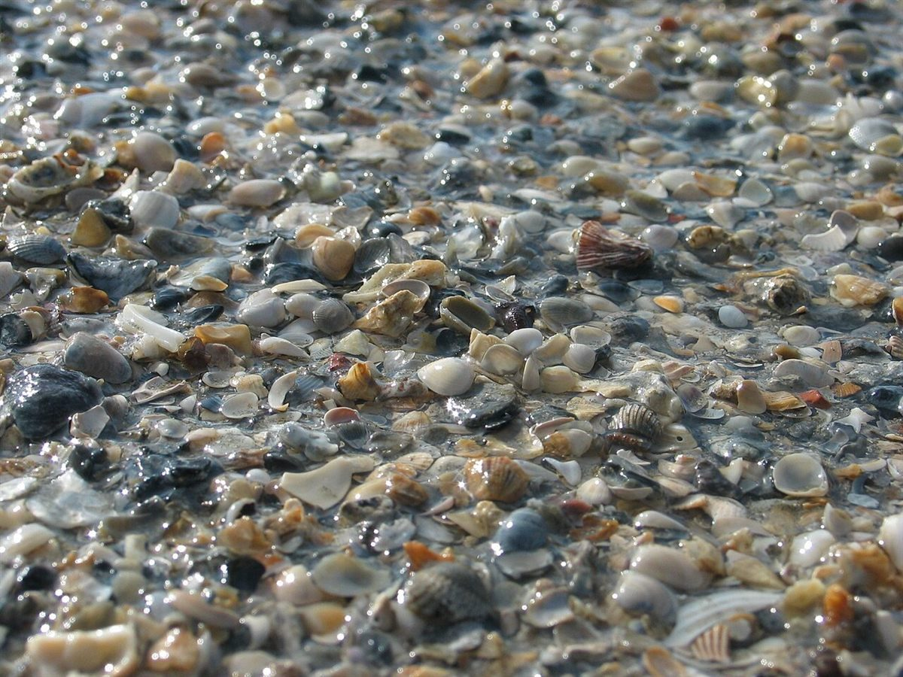
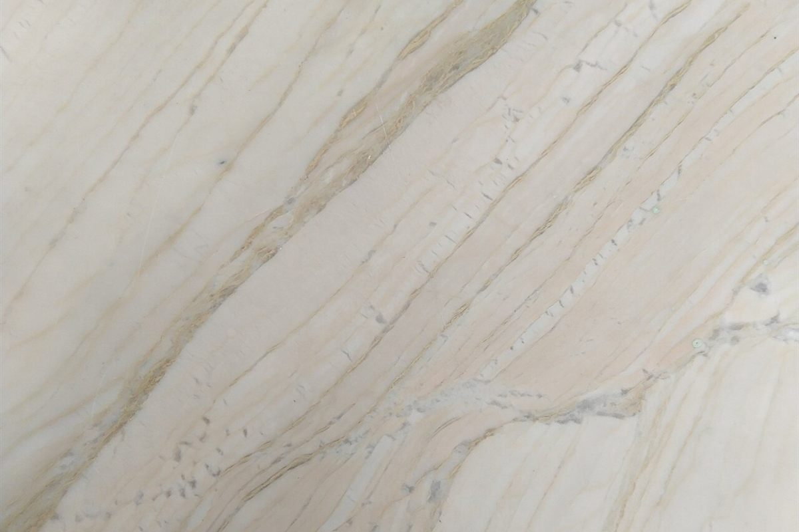

メニュー
メニュー
メニューと価格は準備中です。分かり次第、この見本帖の空欄に入れていきます。
空欄の見本帖
- 01準備中
- 02準備中
- 03準備中
- 04準備中
- 05準備中
上の五つの枠は、内容が決まっていない空欄の見本です。メニューの種類や数を示すものではありません。最新の情報はInstagramをご覧ください。


メニュー
メニューと価格は準備中です。分かり次第、この見本帖の空欄に入れていきます。
上の五つの枠は、内容が決まっていない空欄の見本です。メニューの種類や数を示すものではありません。最新の情報はInstagramをご覧ください。

